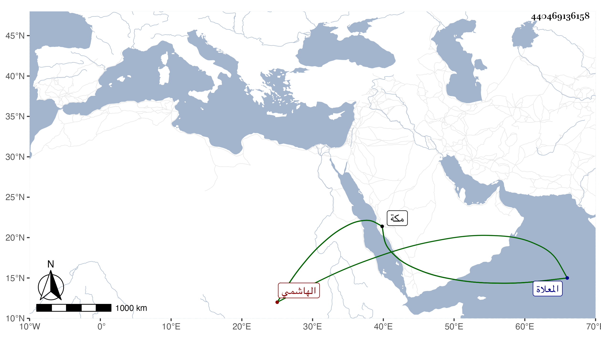

0902Sakhawi.DawLamic.ITO20230111-ara1.EIS1600.440469136158
Biography ID: 440469136158
473
عائشة ابنة الوجيه عبد الرحمن بن أبي الخير محمد بن محمد بن فهد الهاشمي ، ولدت في شوال سنة ثلاث وتسعين وسبعمائة بمكة وسمعت بها من ابن سلامة ، وأجاز لها في سنة خمس وثمانمائة فما بعدها العراقي والهيثمي وابن صديق والشهاب الجوهري والفرسيسي والقطب حفيد القطب الحلبي وآخرون ، وتزوجها العماد عيسى بن موسى بن علي بن قريش وأولدها ثم فارقها فتزوجها عمه عبد الله ابن علي وأولدها أيضا ثم فارقها واتصلت بغيره حتى ماتت في سابع عشر ذي الحجة سنة اثنتين وعشرين بمكة ودفنت بقبر أبيها من المعلاة ، وكانت ذات خير ودين وسكون . ذكرها الفاسي .
